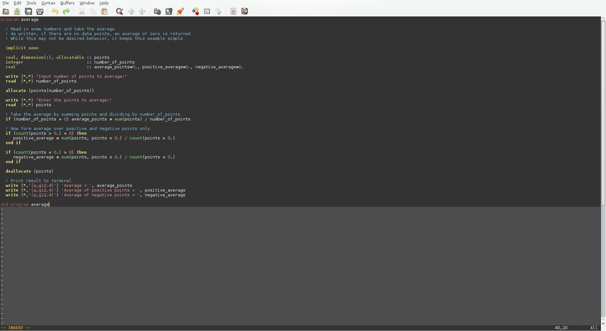
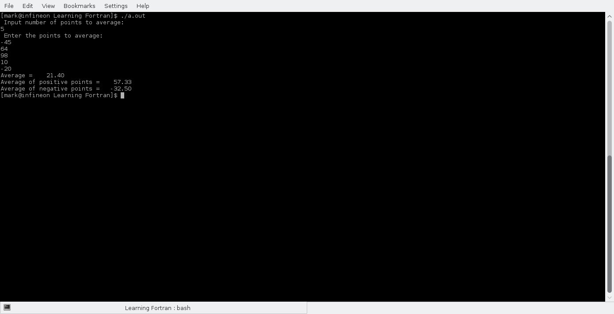
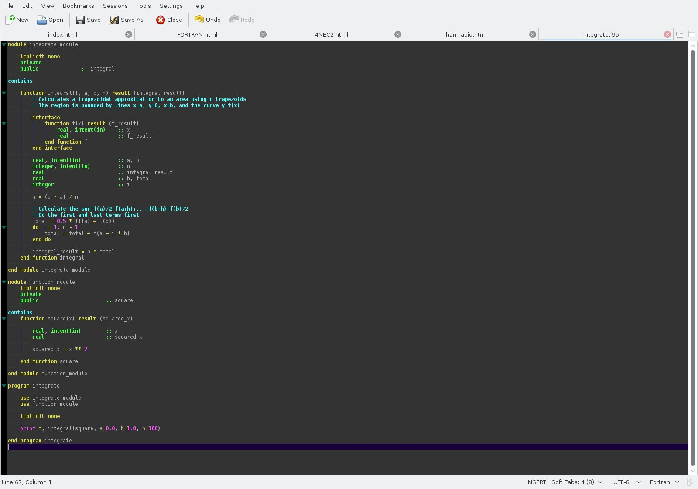
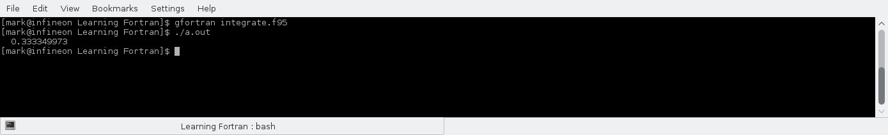

Description
Introduction
The purpose of this section is to contain usefull programs for calculating items of interest to me in various projects. These may include linear algebra, differential equations or calculus. The eventual goal is to have a FORTRAN program running a software control loop on a Raspberry Pi in parallel with a hardware control loop as part of an internet of things project for home/garden control. The control loop in the Raspberry Pi act as a supervisor/monitor for the hardware control loop.
Simple Program to Compute Positive and Negative Averages

This simple FORTRAN program uses an allocatable array to store a series of user entered reals numbers. It then uses the built-in SUM function to easily sum over all of the elements in the array. The SUM command makes FORTRAN extremely powerful for computing series expansions or series sum calculations. It is also extremely useful for numerical calculations of integrals and convolution integrals in control systems engineering.
https://en.wikipedia.org/wiki/Fortran
Program Run - Simple Program to Compute Positive and Negative Averages

The program first inputs the number of elements to average over, and then inputs the data as reals. It then computes separately the positive and negative averages.
Program - Simple Program to Calculate Integrals via Trapezoidal Sums

The function that is integrated is x^2, and it is hardcoded in. The limits of integration are 0 to 1. The program makes use of a module to define the function to integrate, and then this function acts a parameter for the integrate function. The function interface is defined in the integrate_module.
Download integrate.f95 code
Download integrate.f95 code
Program Run - Simple Program to Calculate Integrals via Trapezoidal Sums

The integral of y=x^2 from x=0 to x=1 is 1/3.